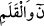
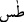
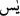
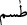
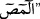
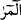
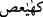
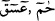
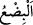

müntehâ ağacıdır. Dalları cennet ehlinin nimetleri, kökleri cehennem ehlinin yiyeceği
olan zakkûmdur. Çünkü o, burçların feleğinin dibindedir. Burçların feleği ise kürsînin
ortasındadır. Kürsî ise cennet arzının sathıdır. Sâbit yıldızlar feleği sekizinci felektir.
Burçlar onun üzerinde ayrıldığı için ona ‘burçlar feleği’ denir. Burçlar feleğinin
üzerinde felek-i a’zam vardır. O felekleri bir araya getirdiği için ‘felekü’l-
eflâk/feleklerin feleği’ diye isimlendirilir. Nakşı olmayan atlas elbise gibi yıldızsız
olduğu için ‘atlas feleği’ adı da verilir. Felek-i a’zamın iki sathının/yüzeyinin iç tarafı
sâbit yıldızların dış tarafına dokunur. Dış tarafına ise hiçbir şey dokunmaz. Çünkü onun
ötesinde bir şey yoktur. Ne boşluk ne doluluk (halâ ve melâ) vardır. Bilakis onunla
âlemin bütün uzantıları sona erer. Onun ötesinde nihâyetsiz nurlardan felekler olduğu da
söylenmiştir. Felek-i a’zamın altında boşluk olduğunu söyleyen de yoktur, bilâkis orası
varlıklarla doludur. Nitekim astronomi kitaplarında da böyle anlatılır.
Sûfîlere göre “lâ halâ ve melâ (boşluk ve doluluk olmayan)” denilen makam, arşın
üzerinde değil ruhlar âleminin üstündedir.
Şerhu’t-Takvîm’de der ki: İlâhî kitaplarda yedi semânın ismi zikredildiği için
hukemâdan bazıları sekizincisinin kürsî, dokuzuncusun da arş olduğunu iddia ettiler. Bu,
Allah Teâlâ’nın: “O’nun kürsüsü yeri ve gökleri kaplamıştır.” (el-Bakara, 2/255)
sözüne de uygun düşer.
3- Küllî hakîkatlerin hakîkati olan hakîkat-i Muhammediyye. Allah Teâlâ “Tâ Sîn
Mîm”de bütün hakîkatlere üstünlüğünden dolayı bütün hakîkatleri en çok kendinde
toplayan hakîkate yemin etmiştir. Çünkü dünya, berzah ve âhiret bakımından hakîkat-i
Muhammediyye hakîkatlerin hakîkati ve rûhudur. Bu yüzden hakîkatler onunla son bulup
mühürlenmiştir.
Her iki âlem Hz. Peygamber’in rahmet atının terkisine bağlanmıştır
Arş ve Kürsî, Onun toprağını kendine kıble edinmiştir
Dünya ve ahret âleminin önderidir O
Aşikâr ve gizli olan her şeyin rehberidir O
Mükâşefe ehlinin büyüklerinden birisi şöyle demiştir: “Sûrelerin başlarındaki
mukattaa harflerinin hakîkatlerini, ancak keşf ve vücûd ehli bilir. Çünkü onlar
meleklerdir. İsimleri harflerin isimleridir. Hepsi on dört melektir. Çünkü mukattaa
harflerinin toplamı on dörttür. Sonuncusu “
”dir (el-Kalem, 68/1). Kur’ân’ın
menzillerinde, çeşitli vecihler üzere zâhir oldular. Bazı menzillerde “ ” ve “ ” gibi bir
melek, bazılarında “
”, “
” ve “ ” gibi iki melek, bazılarında “ ” ve “
” gibi üç
melek, bazılarında “
ve “
” gibi dört melek, bazılarında ise “
” ve “
”
gibi beş melek bulunur. Onların şekilleri tekrar ile birlikte yetmiş dokuz melektir. Her
meleğin elinde îmanın bir şubesi vardır. Çünkü “îman yetmiş küsur şubedir.”[1] “
(küsur)”, birden dokuza kadar olan sayılardır. Hadiste küsurun son sayısı olan dokuz